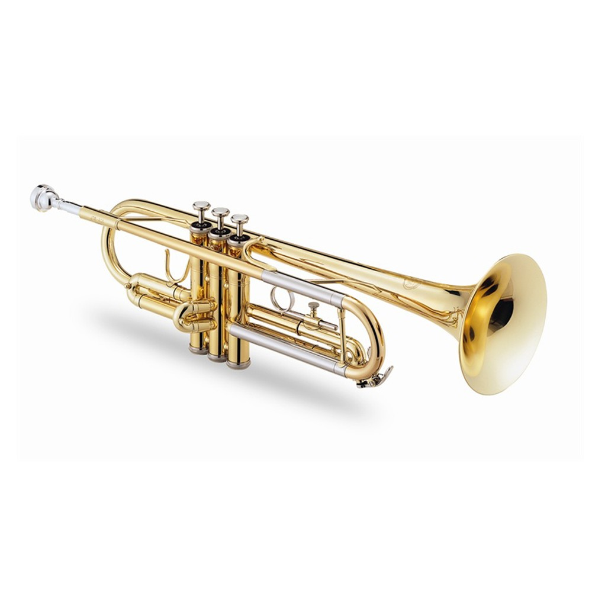

La trompeta es un instrumento musical de viento, que pertenece a la familia de los instrumentos de viento metal o metales, fabricado en aleación de metal. El sonido se produce gracias a la vibración de los labios del intérprete en la parte denominada boquilla a partir de la columna del aire (flujo del aire). Comúnmente, suele estar afinada en si ♭ (bemol), es decir, un tono por debajo de la afinación escrita en el pentagrama, aunque también hay trompetas afinadas en fa, en do, en la y en mi, - bemol -.

HISTORIA DE LA TROMPETA
Evolucion a travez del Tiempo
La historia de la trompeta se remonta a los orígenes de la historia de la humanidad. Casi tan antiguas como la flauta, que se repunta como el instrumento más antiguo y generalizado, debieron ser la trompeta y la corneta, derivadas del cuerno de buey que aún puede servir como trompa de caza. Por lo tanto, las primeras trompetas fueron fabricadas con cuernos de animales cocidos, cañas de bambú, tubos vegetales ahuecados o conchas de moluscos y eran empleadas por las personas primitivas para diversas cuestiones como eran los entierros, rituales para ahuyentar a los malos espíritus, para la caza o transmitir señales